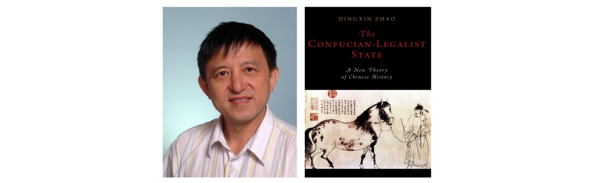

收录于合集 #历史政治学 58个
本书作者简介： 赵鼎新，1953年出生于上海，现为芝加哥大学社会学系Max Palevsky教授、浙江大学人文高等研究院院长。他的主要研究领域为历史社会学、社会运动、社会变迁、经济发展与民主转型。

近年来，赵鼎新教授的英文著作《儒法国家：中国历史新论》（ The Confucian-Legalist State: A New Theory of Chinese History , New York: Oxford University Press,2015）在国内外学界产生了重要影响。该书的写作要从1974年赵鼎新在宁夏工作的工厂中参与“批林、批孔”的政治宣传工作开始。他认为，这种写作工作是一种庸俗化的历史唯物主义批判，即认为阶级斗争是历史前进的动力，而儒家和法家之间的矛盾是中国历史中的阶级斗争的化身。但是，这段工作经历给了他自己阅读古代中国思想家传世之作的机会，让他重新思考了中国古代历史的发展和政治思想的意涵。正如赵自己所述，影响他日后研究最大的是金观涛和刘⻘峰关于中国古代封建社会的超稳定结构的著作。尽管以现在的观点来看金刘两位的论断是备受质疑的，但还是给他了一个很好的认识历史的机会。此外，汤因比（Arnold Joseph Toynbee）、魏复古（Karl Wittfogel）、费正清（John Fairbank）以及韦伯（Marx Weber）等西方思想家的理论也对他影响颇深。赵鼎新在留学麦吉尔大学（McGill University）期间从昆虫学领域转向社会学研究，只因他想对当年的悲剧进行深刻反思并思考如何在未来防止类似悲剧的重演，他将自己的目光转向历史。赵老师的这一经历是他作为上世纪八十年代的年轻学者，在思考历史转折中的中国国家建构时的一种特殊时代背景，这一背景既造就了“河殇一代”，也激发了很多像赵一样既渴望从西方发达国家历史中寻求现代化经验同时又坚持对中华文明和中国历史文化认同的知识分子从中西方历史的比较分析中寻求现代国家建构的答案。
该书旨在对中国历史的范式进行社会学分析，即通过在曼（Michael Mann）的韦伯式理论中引入竞争和冲突的逻辑来发展一种解释历史变迁的理论：通过整合结构性分析和以机制为基础的解释，并且将历史时间性作为一个关键组成部分引入该书的叙述、说明和解释当中，以此寻求建构出一种新的社会学研究。
作为历史社会学研究，该书是历史的，因为这是针对过去的研究。现代史学反对历史目的论，强调历史情景论，而这种对情境的强调又不可避免的导致了碎片化的历史研究。赵鼎新认为，虽然历史不是按照一定目的线性发展且情况各异的，但也有一定的方向和范式（directional and patterned）：积累再多的史料，将四大社会权力割裂开来讲历史也无法理解历史的智慧。该书也是社会学的，因为它强调结构性力量和社会机制在塑造历史动力中的作用。赵鼎新想回答关于历史的宏观和时空模式，在这个还原论解构主义的碎片化时代，想带来一种整体论和辩证法的视⻆下的宏观历史分析。作者希望读者能够理解一个古希腊传统认识论上的标准：对于知识而言，理论应该在涵盖尽可能少的解释性机制的情况下诠释更多的意涵。
该书试图回答两大问题：秦统一中国的原因以及是如何统一中国的？中国古代为什么能形成所谓“超稳定结构”？简单来说，从东周开始政治上，从上百个小型宗法制城邦转型为拥有广阔疆域的绩效官僚制农业帝国；在意识形态上，儒、法、道等影响中国古代历史的重要思想开始出现；在军事上，大体量的常备军开始出现，新型武器和水平高超的军事策略家和军事理论涌现；在经济上，大规模远距离的商业开始出现，大都市随之出现，货币开始广泛使用。但是赵评论道，那些认为这些发展与第二个千禧年的欧洲相似的观点是肤浅的，因为实际上相较于当时的欧洲，东周的社会权力中政治权力最终压倒了其他权力的发展并带来了农业官僚帝国，也就是黄仁宇的“政治早熟”。在拥有大规模常备军的情况下，秦在统一中国后仅15年就覆灭了，而儒家在西汉获得政权仅不到70载便迅速复兴成为国家意识形态。
中国统一后的历史模式简单来说有以下几个特征：一、中国是世界上仅有的延续⻓达两千年的连续帝国体系；二、中国在主要文明中发展出了最强有力的国家传统；三、中国早在西汉便已确立了文官统治（civilian rule），其在两晋南北朝时期衰落并在唐代复兴，而且在宋代出现了新转向，在两千年帝国中将军们甚至很难暂时性的获取统治权（而在欧洲，军事将领拥有巨大的政治权力，而文官统治的出现则已经到现代发展之后了）；四、中国很大程度上是以被游牧和半游牧⺠族的侵略并使其接受儒法国家模式的方式进行扩张（而其他主要帝国以侵略扩张为主）；五、中华帝国是唯一政治上不受世界超验宗教（transcendental world religions）影响，同时对世界主要超验宗教以及大众宗教（popular religion）极大容忍甚至支持的国家；六、相较于早期欧洲国家，尽管中华帝国中的许多城市已经高度商业化，但其在由国家任命的官员的统治下活动，且商人无法获得相对独立政治地位。
理论框架和方法论
该书理论框架是在以下两个前提上建构的：首先，人是竞争的动物；其次，通过政治、军事、意识形态和经济途径，个体或集体会通过竞争获得优势地位，曼将这些途径称为社会权力的四个理想典型来源。
在这二者的前提上，赵鼎新将他的理论概括为五个要点：首先，历史是累积性发展，人类必须以工具理性生产积累财富从而在经济军事竞争中获得优势地位；经济、军事主导权也会带来政治和意识形态的发展。第二，作为四种权力及其不同组合关系的结果，历史发展既非线性又是不可预测的；政治和意识形态竞争很大程度上不依赖于绩效驱动的物质生产，相反当政治和意识形态竞争主导社会时，累积性发展将会被抑制；前现代政治和意识形态行动者总体上是不喜欢累积性发展的，因为它会动摇政治和意识形态建制的稳定;社会在四种权力的不同组合下会出现停滞甚至倒退。第三，尽管军事和经济竞争都产生累积性发展，军事竞争倾向于产生集中的国家权力而经济竞争倾向于产生分散的社会权力。第五，军事和经济竞争都促进社会中工具理性的思想和行为；但军事竞争促进公共取向的工具理性（publicly oriented instrumental rationality）而经济竞争促进个体指向的工具理性（privately oriented instrumental rationality）。第六，当行动者获得了对社会的控制之后他们将通过政治控制和意识形态灌输来制度化其成果; 不同的意识形态以及同国家之间不同的关系不仅产生不同的政治合法化价值，还产生个人和行动者竞争的不同环境。
作为核心解释概念的儒法国家（the Confucian-Legalist state）由东周开始到秦汉最终成型，彼时的四大社会权力形成了一套高度稳定的组合：即政治和意识形态权力的融合，被（国家）驯服的军事权力和边缘化的经济权力。这是一个极具弹性和适应性的政治体系，它延续了⻓达两千年。曼认为前现代政体由于受基础设施限制而无法对广阔的领域建立直接统治，因而必须借助“强制合作”（compulsory cooperation）来维持其秩序。其中最有效的是“强制扩散”（coerced diffusion）：即在罗马帝国领域中生活方式和文化实践的扩散。宋朝以降的中国儒法国家体系成为这种比罗马更精妙的强制扩散的样本，即以一种准宗教信仰式的新儒家价值（neo- Confucian values）作为其统治政治意识形态，而罗⻢没能抑制或使基督教配合其崛起。儒法国家这种融合产物成功的限制了军事权力，并使异族统治者服从这一体系。而帝国儒学—成为了一种道德伦理体系而非超验宗教，尽管其中包含了一些如祖先崇拜、先验论、天人感应等的信仰因素。儒家思想贯穿了官僚国家的统治而其他各种宗教则不能，也正因为此产生了宗教多元的中国模式。边缘化了的经济权力抑制了商业活动的繁荣，使商人阶层难以形成独立的利益群体。
在认识论上，本文是社会学中基于机制的解释的“中层理论”，即着力于回答为什么，即以一组解释问题原因的因素机制，通过定量或定性叙事来说明如何通过以逻辑为基础的因素机制分析来回答问题。同时，赵鼎新注意到了这种因果机制解释的可能弱点——过度的决定论，于是通过尽可能的穷举本理论可适用的研究问题来避免这一可能。应当注意的的是，赵强调该书所论述的特定历史模式有时空情景的限制。因此，该书是超越简单方法论意义上的均衡比较研究，而是转向对因果机制的深度历史解释性比较。此外，为了突破关于机制分析“只见树木不见森林”的局限性，该书使用了多重的社会机制进行解释，并将他们不断变化的关系以及对整个社会的格局和变化的影响有机地联系起来。
一种关于历史变迁的理论
赵鼎新认为竞争的辩证关系和制度化是历史变革的主要动力，这包含两个方面，一是人类倾向于个体或集体竞争的本能，二是四种社会权力的竞争手段及其不同组合。该书的理论是基于关于理想型范畴的演绎推理理论，但应该注意的是本研究的起点不是建构出来的假定，而是人类社会竞争的四大可能性权力。简言之，它结合了人类竞争和曼的四种社会权力的多重功能的理想型理论。
在四种理想型中，经济权力和军事权力分别通过自愿的和强迫性的方式，进行标准清晰的竞争，刺激产生累积性发展；两者的区别在于，具有离散、去中心性的经济权力竞争以实现私利为目标，而具有集权、压迫性的军事权力则以毁灭为目标，公共利益往往只是其副产品。意识形态权力和政治权力则均不产生累积性发展，而且都没有明确的输赢标准，但都具有合法化功能；其区别在于政治权力旨在提供秩序等一定公共产品从而具备的是绩效合法性，而意识形态权力则更多的是伊斯顿（David Easton）的那种弥散型合法性，并且意识形态本质上具有多样性。
在所有四个权力中，政治权力最有可能是压倒性的，在现代，国家政治权力发展成为一种使当代哲学家论述强调非国家政治行动者来制衡的利维坦。绩效合法性不是一种稳定的权力来源，它需要意识形态合法性来提供这种稳定。在借助竞争和曼的社会权力理论的框架下，赵鼎新尝试统一经济决定论的目的论史观与完全否认模式决定论的观念。他认为，由经济和军事权力竞争引发的是累积性发展理论，但历史并非斯宾塞（Herbert Spencer）式的线性发展，因为不同时空下的不同组合的社会权力会带来不同结果。正因为经济和军事竞争在社会发展中的重要性，如社会达尔文主义、经济自由主义、黑格尔式线性史观和⻢克思主义才会在19世纪欧洲出现，因为其旨在推动西方社会生产力进步而误导产生了线性史观。但是，经济和军事竞争会产生有意或无意的结果，如政治控制和信息传播的科技。同样具备鲜明竞争标准的经济、军事权力有不同的影响，前者产生去中心化的经济权力，后者则产生集权化的国家权力。经济和军事竞争的明确标准也促进了行动者的工具理性主义，区别在于军事竞争产生公共指向的工具理性主义，经济竞争产生个体指向的工具理性。尽管人⺠会在政治和意识形态上有所区分，但所有人都被经济利益所吸引，因而经济竞争会催生社会各层面的变化。
赵鼎新还在该书的理论框架对韦伯合法性、理性概念进一步发展。从韦伯的传统、克里斯马和法理合法性三分，到引入了竞争要素和社会权力理论要素的法理- 过程的合法性（legal-procedural legitimacy）、绩效合法性（performance-based legitimacy）和意识形态合法性（ideological legitimacy）。韦伯式合法性理论的类型学划分和他的国家观一样，带有强烈的“传统- 现代”的线性转化取向，即从传统世袭型到魅力、威权型再最终发展为现代法理型合法性的进步过程；而赵的合法性来源理论则更像是一种祛除线性史观的评价性理论，即任何历史时期中的任何权力的合法性来源都可以是合法律过程性、政绩效果和被社会主观接受的程度，三者之间不是互斥且有“传统- 现代”之分的类型，而是可以以不同强弱程度形式存在、组合的复合合法性来源理论。
同样，赵认为人类理性是推动历史发展的重要因素。韦伯认为人类理性应当有目的或工具理性（instrumental rationality）、价值理性（value rationality）或实质理性（substantive rationality）、形式理性（formal rationality）和逻辑理性（theoretical rationality）四类。赵鼎新保留了“工具理性”概念，但他认为在复合社会权力观视野下的工具理性在分别受军事和经济竞争的影响下会激发出公共指向型工具理性和个体指向型工具理性。同时，他讲形式理性和逻辑理性结合起来称为“逻辑- 形式理性”，因为韦伯的这两个类型都是作为“成套工具”（a toolkit type）作用出现的理性概念，这一特性也使其在一个工具理性占主导的社会中将会得到很好的发展。此外，赵保留了韦伯的“价值理性”概念，但仅将其限制为特定价值观念下的理性评价。而经典韦伯式的价值理性概念中包含的对特定历史先例的理性计算被他进一步发展为“历史理性”，即人类通过理解历史模式而对过去和现在进行理解的自觉和努力，这是一种更注重结构变迁而非具体直接因果事件的整体历史观。同“形式- 逻辑理性”一样，“历史理性”同样是一种理性的“成套工具”，而二者在这一含义上又是本质对立的关系。“形式- 逻辑理性”理性倾向于推理并建构互相孤立的事务中的抽象因果规律，而“历史理性”则采取整体方法试图理解宏大历史的图景。至此，赵鼎新将韦伯的人类理性理论发展为具有公共、个体指向的“工具理性”、“逻辑- 形式理性”、“价值理性”和“历史理性”四分的人类理性理论。
在赵鼎新看来，个体指向的工具理性的意识形态是现代性最要的特征。它产生了工业资本主义（Industrial capitalism），现代科学和世俗化的意识形态。当人类足以用个体工具理性控制住传统主义和极权主义之时，后现代性就到来了。在欧洲，个体指向的“工具理性”盛行有三个条件：商人逐渐获得政治、意识形态和军事权力，有能力资助激进知识分子写作支持其盈利活动和资产阶级权力；国家在帝国扩张中愈发依赖商人群体的资金、殖民地管理支持；现存发育良好的“逻辑- 形式理性”理论足以支持知识分子创作出将盈利行为解释为积极价值。
赵鼎新还在他的历史变迁理论框架中引入了对地理环境对历史发展的考察，事实上他在全书也一直都坚持首先对地理和气候环境变迁作为条件，纳入他对历史变迁理论的分析。在笔者看来，作者对地理和气候环境的分析主要在于因为地理气候环境是影响历史变迁的重要变量，作者论述儒法国家体系在塑造中国历史的作用时就必须重视排除这种环境因素的影响。除了地理气候环境因素之外，赵鼎新还在具体的论述中讨论了许多其他条件推动历史发展的可能解释，正如他自己在书中所道，一个更具解释力更扎实的理论，必定是在更多的替代解释和质疑声中诞生的；想塑造一个尽可能完善的理论，最佳的方法就是自己穷举更多的替代性解释并予以回应。读者在理解他解释中国历史的理论框架之后，在深入阅读中也可以感受到作者除了在对史料的娴熟运用和量化历史的形象展示之外，认真回应这些其他学者和作者自己提出的对该书解释质疑的努力，从而建构出那种“涵盖尽可能少的解释性机制却能诠释更多意涵”的扎实理论。
撰文：卢乃杰 审读：杨端程 编辑：康张城
【政文观止Poliview】系头条号签约作者